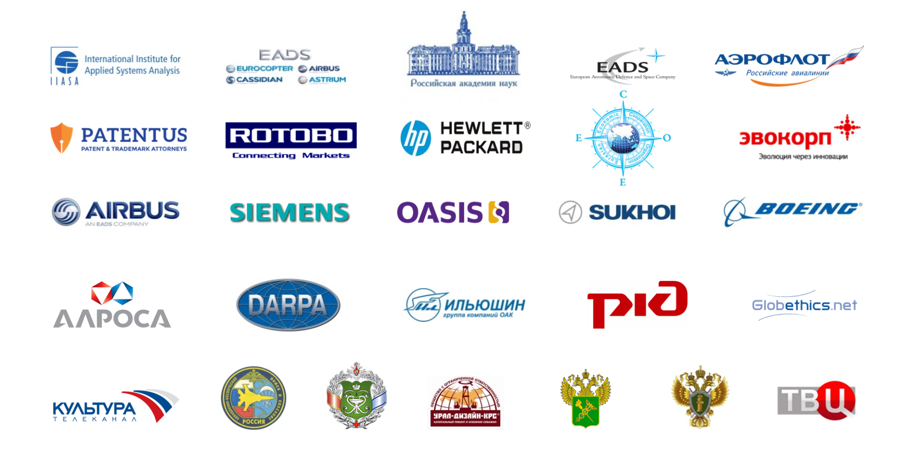
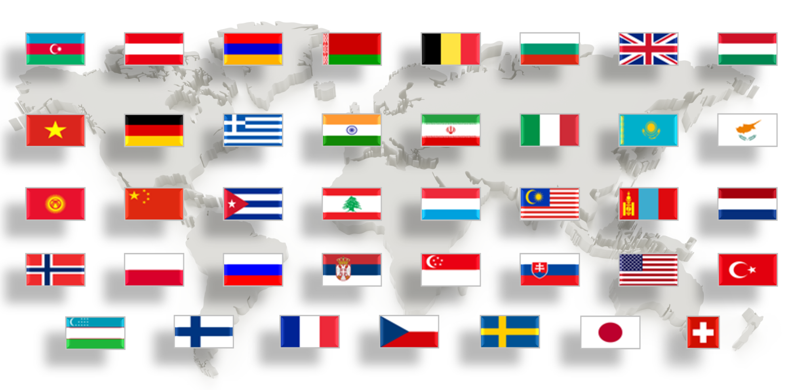

МНИИПУ · MNIIPU
Международный научно-исследовательский институт проблем управленияالمعهد الدولي للبحوث في مشكلات الإدارة
двуязычная веб-версия презентации
النسخة الإلكترونية ثنائية اللغة للعرض التعريفي
AR
RU
المعهد الدولي للبحوث العلمية لمشكلات الإدارة (مНИИПУ)
МЕЖДУНАРОДНЫЙ НАУЧНО-ИССЛЕДОВАТЕЛЬСКИЙ ИНСТИТУТ ПРОБЛЕМ УПРАВЛЕНИЯ (МНИИПУ)
منظمة حكومية دولية تأسست عام 1976.
Международная межправительственная организация, основан в 1976 г.
مНИИПУ
МНИИПУ
المعهد الدولي للبحوث في مشكلات الإدارة (مНИИПУ) هو منظمة حكومية دولية تأسست عام 1976 بموجب اتفاق حكومي دولي.
يرأس المعهد مجلس يتكون من ممثلي الدول المؤسسة، برئاسة الأكاديمي يفغيني فيليخوف، المخوَّل بتنفيذ توجهات حكومة الاتحاد الروسي والأكاديمية الروسية للعلوم.
الهدف من إنشاء المعهد هو إجراء بحوث شاملة وتطويرات في مجال نظرية وممارسة الإدارة.
Международный научно-исследовательский институт проблем управления (МНИИПУ) — международная межправительственная организация, созданная в 1976 г. на базе Межправительственного соглашения.
МНИИПУ возглавляет Совет из представителей стран-учредителей во главе с академиком Е.П. Велиховым, уполномоченным проводить линию Правительства РФ и РАН в этой международной организации.
Цель создания Института — осуществление комплексных исследований и разработок в области теории и практики управления.
الوضع القانوني
Правовое положение
الوضع القانوني للمعهد الدولي للبحوث في مشكلات الإدارة هو وضع منظمة حكومية دولية تتمتع بالشخصية القانونية الدولية، ويُنظم وفقاً للاتفاق الحكومي الدولي واتفاقية بودابست لعام 1980. يتمتع المعهد بالحصانة الدبلوماسية.
الوثائق التنظيمية للمعهد:
▪ اتفاقية إنشاء المعهد الدولي للبحوث في مشكلات الإدارة (9 يوليو 1976)
▪ البروتوكولات الملحقة بالاتفاقية
▪ اتفاقية الوضع القانوني والامتيازات والحصانات للمنظمات الاقتصادية الحكومية الدولية (بودابست 1980)
▪ النظام الأساسي للمعهد
▪ مرسوم حكومة الاتحاد الروسي بتاريخ 6 يونيو 1992
Правовое положение МНИИПУ в качестве международной межправительственной организации, наделенной международной правосубъектностью, регулируется действующим межправительственным соглашением и Будапештской Конвенцией 1980 г. МНИИПУ обладает дипломатическим иммунитетом.
Регламентирующие документы МНИИПУ:
▪ Соглашение о создании Международного научно-исследовательского института проблем управления (подписано 09 июля 1976 г.).
▪ Протоколы к Соглашению о создании Международного научно-исследовательского института проблем управления.
▪ Конвенция о правовом статусе, привилегиях и иммунитетах межгосударственных экономических организаций, действующих в определенных областях сотрудничества (Будапешт, 1980 г.).
▪ Устав МНИИПУ.
▪ Распоряжение Правительства РФ от 6 июня 1992 г.
هيكل الإدارة
Структура управления
يُعد المجلس أعلى هيئة لإدارة أنشطة المعهد، ويتألف من ممثلين دائمين تعيّنهم السلطات المختصة في الدول الأعضاء.
رئيس مجلس المعهد هو الممثل الدائم للاتحاد الروسي، الأكاديمي يفغيني فيليخوف.
المدير العلمي للمعهد هو الأكاديمي سيرغي يميليانوف.
المدير العام — البروفيسور ألكسندر أغييف، دكتور في العلوم الاقتصادية.
تشمل هيئات الإدارة الأساسية:
– المجلس
– المجلس العلمي
– لجنة المراجعة
– المدير العام
– المجلس العلمي‑التقني
– المجلس التعليمي‑المنهجي
– مجلة «مشكلات نظرية وممارسة الإدارة»
– المدير العلمي
– نواب المدير
– المراكز
Высшим органом руководства деятельностью МНИИПУ является Совет, который состоит из постоянных представителей, назначаемых компетентными органами стран, входящих в состав Института.
Председатель Совета МНИИПУ — постоянный представитель Российской Федерации в Совете МНИИПУ академик РАН Е. Велихов.
Научный руководитель МНИИПУ — академик РАН С. Емельянов. Генеральный директор — доктор экономических наук, профессор А. Агеев.
К основным органам управления МНИИПУ относятся:
- Совет
- Ученый совет
- Ревизионная комиссия
- Генеральный директор
- Научно-технический совет
- Учебно-методический совет
- Журнал «Проблемы теории и практики управления»
- Научный руководитель
- Заместители директора
- Центры
اتجاهات ومراكز مНИИПУ
Направления и центры МНИИПУ
اتجاهات ومراكز مНИИПУ:
التطور التكنولوجي
– مركز التقنيات المتكاملة والطبيعية
– مركز إدخال التقنيات المتقدمة
– المركز الدولي للتقنيات العالية EADS‑MNIIPU
التحول الرقمي
– مركز الاقتصاد الرقمي والمجتمع
– مركز الأساليب الرياضية في الأنظمة الحاسوبية المعتمدة على المعرفة
– مركز المعايير المعلوماتية الدولية
– مركز أنظمة البيانات الضخمة
– مركز مشكلات الذكاء الاصطناعي
– مركز أبحاث الأنطولوجيا لهندسة الأنظمة المعلوماتية
التنمية الإقليمية والمكانية
– مركز الدراسات الإقليمية
– مركز الشراكات التكاملية
– مركز إدارة الأنظمة الاجتماعية‑الاقتصادية الكبرى
– مركز التنمية الدولية
– مركز التعاون مع الجماعة الأوروبية
الإدارة المتكاملة
– المركز الدولي لبحوث تطوير المنافسة
– المركز الدولي للاستشارات الإدارية والاستثمارية
– مركز التنبؤ
– مركز الإدارة المتكاملة
– مركز إدارة الأصول المتعثرة
– مركز إدارة أسواق العملات والمواد الخام والطاقة
– مركز أخلاقيات الإدارة
– مركز التخطيط الاستراتيجي والاستشراف
– مركز المنافسة العالمية
تاريخ الإدارة
– مركز مشكلات الإدارة في حالات الحرب والسلام
– مركز التاريخ المالي‑الاقتصادي والسياسي للإدارة
– مركز دراسة النخبة والجيوسياسة
الصحة والبيئة
– مركز إدارة الصحة وطول العمر
– مركز المشكلات البيئية‑التكنولوجية
التعليم
– مركز المشاريع التعليمية الدولية
– مركز البرامج الشبابية الابتكارية
الإدارة في القطاعات الاستراتيجية
– مركز مشكلات الحماية الكوكبية
– مركز السلامة البيئية والكيميائية
– مركز القانون النووي والمائي
– مركز إدارة الأنشطة الفضائية
– مركز إدارة صناعة الإلكترونيات
– مركز إدارة العلوم
– مركز أبحاث النظام المالي العالمي والسياسة النقدية
– مركز اقتصاد المعرفة
مشاريع الاتصال والإعلام
– مركز تقنيات التأثير
– مركز الاتصالات الدولية التكاملية
– مركز المشاريع الإعلامية الدولية
– مجلة «مشكلات نظرية وممارسة الإدارة»
– مركز تكنولوجيا الإعلام
التقييم والتصنيف
– الوكالة الدولية للتصنيف
الأرشيف العلمي للمعهد
سجل التقنيات المتقدمة واللجان.
ТЕХНОЛОГИЧЕСКОЕ РАЗВИТИЕ
– Центр цельных и природоподобных технологий
– Центр внедрения опережающих технологий
– Международный центр высоких технологий EADS – МНИИПУ
ЦИФРОВАЯ ТРАНСФОРМАЦИЯ
– Центр цифровой экономики и общества
– Центр математических методов в компьютерных системах, основанных на знаниях
– Центр международных информационных стандартов
– Центр систем больших данных
– Центр проблем искусственного интеллекта
– Научно-исследовательский центр онтологий системной инженерии информационных систем
ПРОСТРАНСТВЕННОЕ И РЕГИОНАЛЬНОЕ РАЗВИТИЕ
– Центр регионалистики
– Центр интеграционных партнёрств
– Центр проблем управления крупными социально–экономическими системами
– Центр международного развития
– Центр по сотрудничеству с Европейским сообществом
ИНТЕГРИРОВАННОЕ УПРАВЛЕНИЕ
– Международный научно-исследовательский центр развития конкуренции
– Международный центр управленческого и инвестиционного консультирования
– Центр прогнозирования
– Центр интегрированного управления
– Центр управления проблемными активами
– Центр проблем управления валютными, сырьевыми и энергетическими рынками
– Центр этики управления
– Центр стратегического планирования и форсайта
– Центр глобальной конкуренции
ИСТОРИЯ УПРАВЛЕНИЯ
– Центр проблем управления в условиях войны и мира
– Центр проблем финансово-экономической и политической истории управления
– Центр исследования элиты и геополитики
ЭКОЛОГИЯ И ЗДОРОВЬЕ
– Центр управления здоровьем и долголетием
– Центр эколого-технологических проблем
ОБРАЗОВАНИЕ
– Центр международных образовательных проектов
– Центр инновационных молодежных программ
УПРАВЛЕНИЕ В СТРАТЕГИЧЕСКИХ ОТРАСЛЯХ И ИНФРАСТРУКТУРАХ
– Центр проблем планетарной защиты
– Центр проблем экологической и химической безопасности
– Центр ядерного и водного права
– Центр проблем управления космической деятельностью
– Центр проблем управления электронной промышленностью
– Центр проблем управления наукой
– Центр исследований глобальной финансовой системы и денежно-кредитной политики ведущих стран
– Центр экономики знаний
КОММУНИКАЦИОННЫЕ ПРОЕКТЫ И МЕДИА
– Центр технологий влияния
– Центр международных интегративных коммуникаций
– Центр международных медийных программ
– Журнал «Проблемы теории и практики управления»
– Центр медиатехнологий
РЕЙТИНГИ, СЕРТИФИКАЦИЯ И ЭКСПЕРТИЗА
– Международное рейтинговое агентство
НАУЧНЫЙ АРХИВ МНИИПУ
РЕЕСТР ОПЕРЕЖАЮЩИХ ТЕХНОЛОГИЙ. КОМИТЕТЫ.
Структура центров МНИИПУСхематичное распределение тематических направлений
Технологическое развитие — 18%
Цифровая трансформация — 17%
Региональное развитие — 12%
Интегрированное управление — 20%
Образование и наука — 13%
Экология и здоровье — 8%
Коммуникации и медиа — 7%
Рейтинги и экспертиза — 5%
بعض الشركاء
Некоторые партнеры
بعض الشركاء.
Некоторые партнёры.

التعاون الدولي
Международное сотрудничество

جهات الاتصال
Контакты
المعهد الدولي للبحوث في مشكلات الإدارة
العنوان: روسيا، موسكو، جادة الذكرى الستين لأكتوبر، مبنى 9
هاتف: +7 (499) 783‑3202
البريد الإلكتروني: info@mniipu.org
Международный научно-исследовательский институт проблем управления
Адрес: Россия, Москва, проспект 60-летия Октября, д. 9
Тел.: +7 (499) 783-3202
E-mail: info@mniipu.org
МНИИПУ · Электронная презентация · المعهد الدولي للبحوث في مشكلات الإدارة — عرض تعريفي إلكتروني